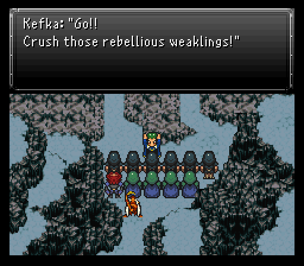
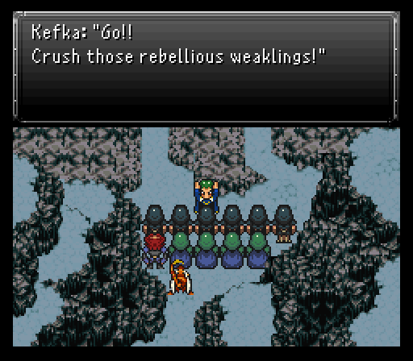
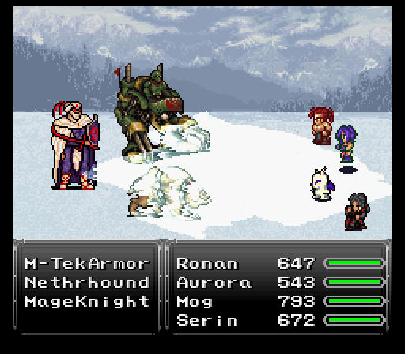
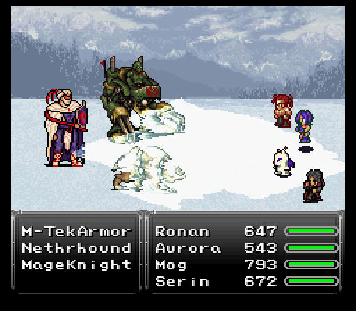
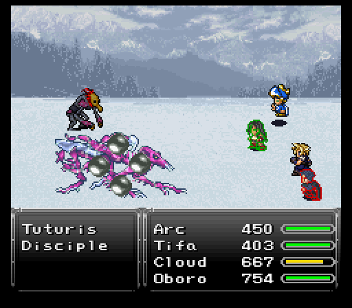
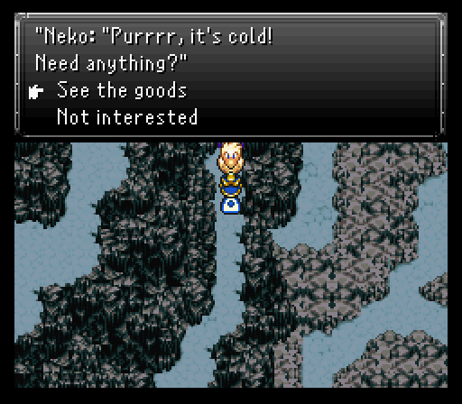

Part 10: Battle for the Frozen Esper
Three parties united, Fraust battlefield - Protect the Esper!
Everyone's gathered to protect the esper so let's get cracking shall we?
With Oboro's help secured for the upcoming battle, one more person offers his services as well. It's none other than our friendly neighborhood prinny hater Mog and he'll be most welcomed here simply because I can run two full parties and pick a person to essentially sit out this upcoming battle. Alternatively you could put three characters in each party, which is how it's intended to be I'm sure, but playing on Insane difficulty here I want to utilize my strongest option. Also I do all my equipping once the battle has begun, due to Mog being in my primary party.
 

The regular enemies for the most part are all Dark Elites from Dreadwood Forest. With my primary team of Aurora, Serin, Ronan, and Mog, the fights get cleared out rather quickly and Aurora can heal up the team between battles. Mp for Aurora isn't an issue since I'm packing plenty of Ethers.
Part of the reason I employed Mog in my primary team is so he can learn his ice themed dance, Arctic Slide. All the moves on it are very good here. Snowball helps knock down some of the bulky hp totals on the enemies here while Avalanche & Absolute Zero are solid AoE damage moves. Mog can easily break 500+ damage with them at his current level if he equips an Oracle Ring. Ronan gets Speed Boots and Paladin icon since he has the most hp and we want him using Rising Phoenix as quickly as possible. Serin can do whatever is needed, Sonic Shot and Poison Nova do roughly the same damage, and Cosmic Fang will work against the Dark Elites and M-TekArmor, but not the others.
 

On the new enemy front, there's Netherhounds, MageKnights, and Nightraids. Netherhounds aren't too bad besides some poison shenanigans, Nightraids like to use Shadowmeld to make themselves invisible (but since all my AoE attacks are magic aligned...heh) while also having some decent single target magic attacks, and MageKnights have a permanent reflect up so you'll need to use attacks that won't bounce off of it. Netherhounds absorb poison and use Blaze, so make sure you have your Ashen Cowls equiped.
Once all the pawns have died, my secondary team of Cloud, Tifa, Oboro, and Arc step up to the plate. They get to deal with a Disciple and his pet Tuturis. While the Disciple has some strong single target moves, the Tuturis is the real threat with its Magnitude Eight doing close to 400 damage to the entire team. Its single target strikes are no jokes either, such as Rock Slide.
The Tuturis does have one weakness, besides its actual weakness which is wind elemental...and that's being able to slow it. Doing that gives you a huge advantage, making it much easier to heal with Potions to keep up with Magnitude Eight's damage. As for his actual weakness, if Cloud is in your party like he is mine, equip him with a Hawk Cleaver (wind elemental), Vambrace and Power Glove, and enjoy. Tifa should try for Waterkick or Wave Cutter, they'll do around 1k damage.
Probably a good idea to drop that Disciple first. He's weak to Ice. He likes to counter Throw with Revenge and Havoc with Stone, so take heed if Oboro or Avalon is in your party. After that, the soldier's partner should be fairly simple enough to drop so long as you keep it slowed and make sure your team is hasted. Everyone with Shell helps too to curb Magnitude Eight's damage.
Once those two are dealt with, you'll receive a Holy Amulet as a reward. Now heal up and go check out Neko's wares in the northwest. Besides some assorted consumables, there's some decent armor and a couple new weapons in the Morning Star & Ocean Spear. The former is a ranged weapon while the latter is a water elemental weapon. When you're done here, go give Kefka a visit so his clowny behind can be kicked back to where he belongs.

Kefka's not really much different in his approach compared to the minor scuffle Ronan & Oboro had in the Imperial base area. His physical have a bit of a kick to them, but he's more adept with magical combat. Scorch/Freeze/Storm can all do 500-600 damage if it strikes someone without Shell up, but honestly? That's about the worst he can pull out, besides Poison Frog. He has some ailment moves like Toxic Bomb & Sleep, and Silence, or potentially halving a character's level via Black Shock, but he's certainly not like the Disciple and his beast buddy protecting him. His special attack, Wild Smile, confuses a character and cannot be dodged. He also has a 1/3 chance to counter Reels with Sleep and any magic with Expel, which can be annoying.
I suppose Kefka's own buddies are supposed to be threatening, but they're not. The dual Clockwerks focus on ripping off your character's buffs, but don't really do much otherwise.
After some time has passed, Kefka will use Regen on himself and swap out the Clockwerks for a singular Skuldier. It doesn't do a damned thing worth mentioning and you can kill it off instantly with Holy Water if you have any.
Strategy here is to just ignore the small fry and aim all of your strong attacks at Kefka. Arc can provided some insurance from the tier 2 spells via Runic, but it's hardly a requirement unless you're going into this fight at a lower level than me.
Before offing the clown face, make sure to steal his Elixir. He'll drop a Psycho Blade which is a really nice new Aether for Serin. Hits all enemies, does good damage, and can inflict blind and/or berserk.
The new journey begins!
The team has just finished driving away clown man Kefka and his army. Now there should be nothing left to distract everyone as they inspect the esper. Little did they know Aurora had a rather volatile reaction the last time she got close to the esper. Aurora decides to do a repeat volatile reaction, though this time the end result is a little different as her physical form changes, then she flies off into the world.

The next morning, the task is clear...chase after Aurora. Seems like she was reported to be going east. Luckily, Durandal Castle has come back above ground and can shuttle the party past the mountains to the east.
As for deciding on a team, Ronan & Serin and some randos tag along just to see a bonus scene at Durandal Castle, then I'll return and bring Cloud, Tifa, Serin, and I'll leave a spot open for a returning member. Feel free to choose your party however you'd like, every character has their uses and you can return here at any point to change them. There's plenty to pickup around Fraust now that you can walk around in town though. Lots of miscellaneous items in random spots, including a Reflect Ring that grants auto-reflect found in the storage house south of Arvis's abode.
Store wise, I make sure to get enough Mithril Gloves & Mystic Rings that I can kit out a full party if I need to. There's also Frost Gloves at the weapon shop and I'm going to grind out some gil to pick up a pair of those before the next segment.
Also of interest...someone mentioning that a figure of interest is selling something at the moogle's home in the caves. One timeskip after looting the mayor's house and we find a random pig selling a Golden Apple. This item permanently boosts a character's hp by 100. Not bad at all for an asking price of 3k gil.
Now we're at Durandal Castle. If you take the first set of stairs down to the west, you'll find a guy responsible for making the castle submerge and resurface. Evidently that last submerge damaged the mechanical workings and only some Machine Oil will fix it. Turns out it was a very good thing I bought that back in Kaldor Trade City eh? If you did not, there is an option to fast travel there. To walk there, you'll have to go through the cave to Seascape Town, over Mt. Zephyr, take the raft at the Crimson Blades' hideout, then take the bridge to the north. Either way, you'll need to sail back.
There's also a special cutscene you can view if you rest in the guest bedroom area with Ronan & Serin in your party that details how their father passed away and shops that have nothing new in them....but there's a catch. If you put Serin as your on screen character, you'll get a 50% discount on all items. Stock up on all of your important consumables here from now on if possible.
Next we venture off to the Eastern Region!